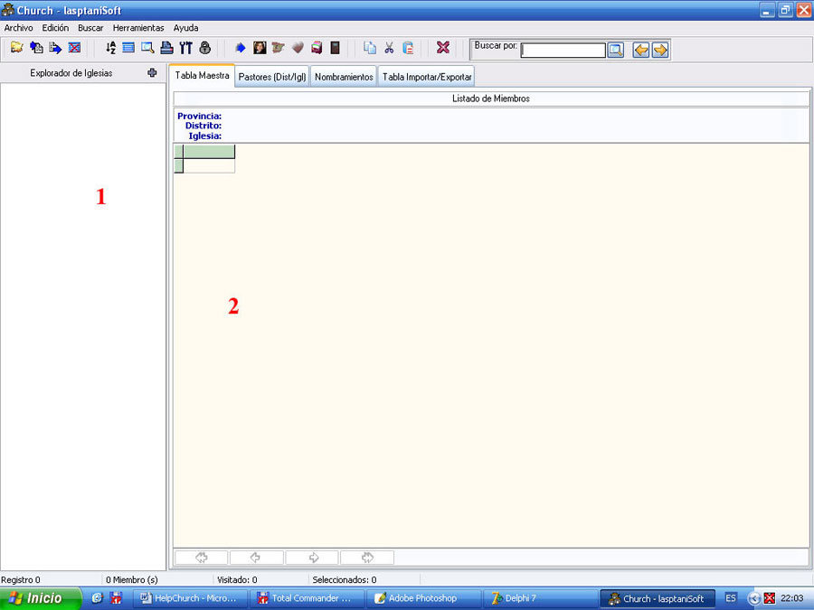

La Ventana Principal

Figura 1. Ventana Principal Church-lasptaniSoft.
En la figura 1 se muestra la pantalla inicial de la aplicación, como puede notar el Explorador de Iglesias (1) y la Tabla Maestra (2) están vacíos, y no solamente eso, la mayoría de los datos o casi la totalidad deben ser introducido por usted, quien es el encargado de manipular la aplicación.
A partir de aquí, comienza el trabajo con Church. Le sugerimos que vea el apartado Pasos en el Trabajo con Church para que estudie la secuencia a seguir en el trabajo con esta aplicación.